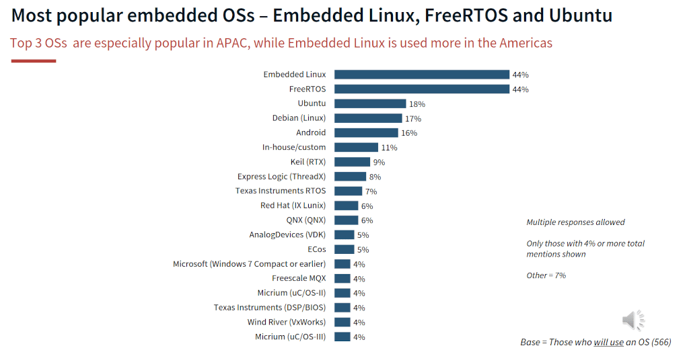

Zephyr Kullanmalı mıyım? “Bana da mı Zephyr?”
İlk tanıtım yazısında Zephyr’in bir ekosistem sunduğunu ve popüler olduğunu anladık. Peki projenizde Zephyr kullanmalı mısınız?
Popülerliğe Dikkat ❗
Zephyr verilerle geliştirme açısından popüler olduğunu ve üzerinde aktif olarak geliştirilme yapıldığını bizlere gösterebiliyor. [1] Bu açıdan da popülerlik önemli olsa da Zephyr piyasadaki ürünlerde ne kadar sık kullanılıyor? ve Geliştiriciler tarafından ne kadar sık tercih ediliyor? Bu soruların cevabını almak kolay değil!
Zephyr özelinde kısıtlı sürede yaptığım araştırmalarda Zephyr’in piyasada kullanım oranı ile ilgili sağlıklı bir veriye rastlamadım. RTOS Market Share gibi aramalar yaptığımda da yine Reddit gibi ortamlarda paylaşılan kişisel görüşlerden ve firmaların (bir şekilde) kendilerini övdüğü blog yazılarından öteye de pek bir şey çıkmadı. Fakat 2018 yılında SAVTEK te yaptığım FreeRTOS sunumumda da kaynak olarak kullandığım (sunum linkine 🤓 About sayfasında bulabilirseniz bakmak isterseniz) ASPENCORE Embedded Surveyde bilgiler bulabildim. An itibariyle bu anketin güncel sürümü 2023 yılını yansıtmaktadır. Başka veriler için de ankete bir göz atmayı düşünebilirsiniz:
The Current State of Embedded Development, 2023, ASPENCORE
Burada geliştiricilere yöneltilen sorulardan biri de gömülü işletim sistemi tercihleri ve sonuç şu şekilde çıkmış:

Ankete göre geliştiriciler tarafından en çok tercih edilen RTOS, FreeRTOS. Zephyr ise listede yer almıyor. %4’ten daha az oy alan seçenekler gösterilmemiş durumda. Listenin karışık olduğunda dikkat edin, hem genel amaçlı işletim sistemleri hem de RTOS’lar mevcut. Öte yandan anketteki toplam katılımcı sayısının 650 civarında olduğunu belirteyim.
Bu yazıyı Mart 2025’te yazıyorum ve anket sonuçları Mayıs 2023’e ait. Elbette bu 2 yılda değişiklikler olmuş olabilir. Belki Zephyr şu an listeye girmiş olsa bile 2 yılda muazzam bir sıçrama yapıp en tepeleri zorluyor olması benim için şaşırtıcı olur. Şu anda da bu sorunun galibinin RTOS kategorisinde FreeRTOS olduğunu düşünüyorum.
Öte yandan Stackoverflow ve özellikle Reddit gibi ortamlarda havayı koklamak mümkün. Buradan da birkaç threade baktığımızda tercihin FreeRTOS yönünde olduğunu görüyorum:
Bu thread’lerde FreeRTOS’un yanında ThreadX in de önerildiğini görebilirsiniz ve ThreadX de ankette üstte çıkan işletim sistemlerinden biri. Günümüzde gelişimine Eclipse Foundation altında devam ediyor ve tam doğru adı aslında güncelde Eclipse ThreadX.
Bir yandan da popüler ve “yeni nesil” önemli MCU üreticilerinin Zephyr tarafında yer aldıklarını görebiliyoruz. Bu üreticiler Zephyr’in geliştirilmesine de katı sağlıyor, örneğin Nordic. Bu, Zephyr projesinin uzun vadede geleceği açısından iyi bir gösterge. Fakat geliştiriciler üreticilerin yönlendirmesinden farklı tercihlerde de bulunabilirler uzun vadede.
Dikkat ederseniz Nordic’te nRF serisi gibi ürünler var ve bunlar
connectivity ürünler. Dolayısı ile onlar için Zephyr’i desteklemek mantıklı
olabilir. Öte yandan ESP32 de böyle bir ürün fakat o tarafta Espressif tarafndan
temelde FreeRTOS da destekleniyor. Bunlar biraz da tarihsel gelişime dayanıyor.
FreeRTOS çok daha eski bir RTOS ve ESP32’ler çıktığında zaten ortamda Zephyr
falan pratik anlamda yoktu. [2] 2017’de Zephyr’de ilk ESP32 için destek geldi,
düşünürsek hızlı gelmiş. [3] ESP32’ler bugün çıkıyor olsa belki de ilk
desteklenen RTOS, Zephyr olurdu. 🤷
Zephyr ne zaman uygun olabilir?
Elimizdeki veriler ışında Zephyr’e “tüm geliştiricilerin atladığını” söylemek doğru olmaz ve geliştiriciler tarafında şimdilik çok da popüler olmuş değil. Ama bu onu kötü bir tercih de yapmaz, duruma göre değerlendirmek lazım.
İlk yazımda da belirttiğim gibi bence Zephyr’in en güçlü olduğu kısım connectivity. Dünyaya internet üzerinden açılan IoT tarzı ürünler geliştiriyorsanız, internete bağlı olmasa bile çevre cihazlara Blueetooth gibi arayüzler üzerinden bağlanan cihazlar geliştiriyorsanız Zephyr iyi bir tercih olabilir. Burada hem geliştiriciye sağladığı kolaylıkları düşünmemiz gerekir hem de güvenlik açısından sağlanan faydaları göz önünde bulundurmalıyız. Zephyr, bir gömülü Linux dağıtımı gibi güncellenen bir işletim sistemi. 7/24 internete bağlı bir gömülü sistemin güvenliğini sağlamak önemli ve görece zor bir konu. Bu durumlarda Zephyr ekosistemi çatısı altında yer almak birçok güvenlik tehditinden korunmak için iyi bir tercih olabilir.
Ayrıca yazılımınızın çeşitli sertifikasyonlara uyumlu olmasını istiyorsanız Zephyr yine iyi bir tercih olabilir. [1] Zephyr’de Software BOM, SBOM, oluşturma gibi seçenekler de mevcut, bunlar da işinize yarayabilir. FreeRTOS tarafında da sertifikasyon tarafında SafeRTOS gibi varyantların olduğunu da belirteyim.
Gün geçtikçe bir ürünün, yazılımın hızlı geliştirilmesi önem kazanıyor. Buna Time to market, TTM diyebiliriz. Zephyr tarafında 750’den fazla kart doğrudan destekleniyor. [4] Elbette ürününüzde kullanacağınız kart bunların aynısı muhtemelen olmayacaktır. Ama en çok benzeyen kartı temel alıp, üzerinde değişiklik yaparak ilerleyebilirsiniz.
Elbette bugüne kadar başka bir RTOS ile, örneğin FreeRTOS ile, ilerlediyseniz ve elinizde zaten hazırda birçok proje varsa ve yeni çalıştığınız bir karta bunu hızlı port edebiliyorsanız var olandan devam etmeyi tercih edersiniz.
Zephyr ekosistemini değil de kernelini de düşündüğümüzde FreeRTOS’a kıyasla daha fazla özellik, IPC mekanizmaları gibi, sunduğunu söyleyebiliriz. Sizin ihtiyacınız vardır, yoktur orası aynı. FreeRTOS’u ben bir scheduler + temel IPC kütüphanesi gibi görüyorum. Zephyr’de bu tarafta da seçenekleriniz biraz daha geniş.
Ürün açısından değil de kendimizi geliştirme açısından da Zephyr’i çalışmak faydalı olabilir. Zephyr’de birçok soyutlama katmanı yer alıyor. Projenin yapısı ve kullanımı da bare metal programlamadan çok, bir gömülü Linux projesi gibi. Bu yüzden gömülü Linux tarafından gelip RTOS ile donanıma biraz daha yaklaşan biriyseniz, bare metal programladan gelip RTOS’a ve gömülü Linux’a giden birine kıysala daha rahat edebilirsiniz, en azından başlarda. Bare metal’den gelip, gömülü Linux’a yolculuk eden biri için de Zephyr mantıklı bir durak olabilir. Burada soyutlamanın nasıl yapıldığını, devicetree gibi araçların nasıl dahil olup hangi sorunları çözdüğünü görmek gelişim açısından faydalı olcaktır.
Zephyr, C dilinde kodlanmaktadır. MCU’lar gibi kaynağı kısıtlı yerler için tasarlanmıştır. Devicetree gibi görece karmaşık yapılar kullansa da ve bu yapılar Linux’ta da yer alsa da Zephyr’in bunları ele alış şekli Linux’tan farklıdır. Zephyr, kaynak tüketimi gibi parametreleri iyileştirmek için C trick’leri ve macro abuse ile “değişik” çözümler içermektedir. C ile çalışıyorsanız ve özellikle gömülü sistemlerde geliştirme yapıyorsanız Zephyr’in bu problemleri nasıl çözdüğünü çalışmak yararlı olacaktır. Zephyr kullanmayacak olsak bile bu bizler için öğretici olur. Sonuçta birçok gömülü yazılım profesyonelinin katkı sunduğu bir proje ve iyi bir “kod okuma egzersizi” olabilir.
Zephyr’in avantajlı olabileceği bir noktada şu olabilir: Elinizdeki yazılımı birden fazla platformda aynı anda çalıştırmak istiyorsanız, farklı üreticilerin farklı MCU’ları gibi, ya da ileride görece daha kolay port etmek istiyorsanız Zephyr burada anlamlı olabilir. FreeRTOS gibi bir RTOS’a kıysla Zephyr donanımı daha fazla soyutladığı için birçok kütüphane vendor independent konumdadır. Üreticiye bağımlı kısımlar da genelde üreticiler tarafından resmi olarak Zephyr ekosistemine kazandırılmaktadır. Projenize göre bu, sizin için elzem bir ihtiyaç da olabilir.
Zephyr ne zaman uygun olmayabilir?
FreeRTOS’u düşündüğümüz zaman, kendisi aslında bare metal C projemize dahil ettiğimiz 5-6 dosyadan oluşan bir “kütüphane”den farklı değildir. Elbette RTOS ortamında, multi-thread programlama yapmak bare metal’de bir super-loop içerisinde iş yapmaktan farklı konuları bilmeyi gerektirecektir. Bu tüm RTOS’larda çalışırken de böyledir. Fakat bunları bir kenara bırakırsak FreeRTOS gibi RTOS’u projemize dahil etmek görece kolaydır. Burada sadece RTOS’lu projenin derlenmesinden bahsetmiyorum. Eklediğimiz RTOS’u kullanmaya başlama ve elimizin ısınması hızından da bahsediyorum. Zephyr ise görece daha dik bir başlangıç ve öğrenme eğimine sahiptir. Elimizin ısınması için daha fazla zaman geçirmemiz gerekebilir. Bu avantajlar kısmında Zephyr’in lehine bahsettiğim Time to market, TMM, için bir dezavantaj bile olabilir. Çünkü Zephyr ile çalışmaya başlarken Devicetree, Kconfig, west gibi birçok kavramı öğrenmemiz gerekecektir. FreeRTOS ile çalışmak daha anam babam usulü olmaktadır.
Reddit’den bir yorum: [5]
Zephyr is 80% configuration and 20% coding
Kaynak tüketimi açısından elimde size sunabileceğim bir veri yok. Yani aynı işi FreeRTOS ile yapsaydık bellekte şu kadar yer kaplar ve şöyle performanslı çalışırdı, Zephyr ile yaptık şöyle oldu diyemeyeceğim. Fakat Zephyr dokümanlarından görünen o ki Zephyr kerneli ve işletim sistemini birçok açıdan konfigüre edebiliyoruz. Burada kaynak verimliliği bizim için önemli ise ayarlamamız gereken birçok parametre olabilir. Bunları doğru ayarladıktan sonra problem yaşamayabiliriz. Bu konuda spekülasyon yapmak istemem ama Zephyr oldukça kapsamlı bir işletim sistemi olduğu için “ipin ucunu kaçırırsak” platformumuza sığamayabilir, dikkatli olmakta fayda var.
Performans açısından da çeşitli benchmark sonuçlar bulmak mümkün. Fakat ben praikte MCU’da koşan bir RTOS’un context switch time performansı gibi metriklerinin çok da önemli olduğunu düşünmüyorum. Buralarda RTOS’ların getireceği overheadler elbette olmaktadır, az ya da çok. Şahsen bir RTOS’u diğerine göre bazı işlemleri birkaç mikrosaniye daha hızlı yapıyor diye doğrudan tercih etmem. RTOS’lar arasında performans farklılıkları olsa da konuştuğumuz RTOS’ların hiç biri order of magnitude kötü çalışmamaktadır. Kodumun çalışması o birkaç mikrosaniyeye kaldıysa tasarım ve karar aşamasında bir şeyler yanlış gitmiş demektir diye düşünürüm.
Zephyr ile çalışıyorsanız geliştirme ortamınızın Linux olması bence daha doğru olacaktır. Her ne kadar Windows üzerinde çalıştığı belirtilse de, ben denemedim, geliştirme ortamının native olarak Linux ortamı için kurgulandığını düşünüyorum. En azından benim tercihim bu yönde olurdu. Bu, sizin geliştirme ortamınız için uygun olmayabilir. Windows kullanmanız gerekiyordur ve Zephyr ile yaptığınız denemeler sorunsuzdur, o zaman kullanırsınız elbette. Ben burada sadece konuya dikkat çekmek istedim.
Hangisini öğrenelim? Zephyr mi FreeRTOS mu?
RTOS ile çalışmaya başlayacak ve özellikle bare metal tarafından gelen, muhtemelen elektronik mühendisliği kökenli arkadaşlar için ben öğrenilmesi ilk gerekeninin FreeRTOS olduğunu düşünüyorum. FreeRTOS hem piyasada da yaygın kullanımı olan, görece basit ve öğrenimi daha kolay bir RTOS. Hiç RTOS ile çalışmadıysanız thread, mutex, semaphore gibi kavramlar ve bu tasarımlarda kullanacağınız kalıplar, patterns, zaten sizler için yeteri kadar yeni ve zorlayıcı olacaktır. Bir de bunun yanına kullandığnız RTOS’un zorluk getirmesini istemeyiz. O açıdan temelleri öğrenmek istiyorsanız, RTOS dünyasına adım atıyorsanız bence tercihiniz FreeRTOS olmalıdır.
Zephyr ise bare metal tarafıdan gelen kişilerden ziyade gömülü Linux çalışıp, oradaki derleme süreçlerine hakim olup da RTOS işine bulaşan kişiler için daha kolay anlaşılan bir yapı olacaktır. Ama bu durumda olsanız bile FreeRTOS yine kötü bir tercih olur demiyorum elbette.
FreeRTOS ya da başka bir RTOS ile biraz uğraştıktan sonra da Zephyr’e geçişte işiniz daha kolay olacaktır. Bu sefer, temel RTOS kısımlarına takılmayacak ve Zephyr’in sizler için neleri kolaylaştırdığını daha rahat göreceksiniz. Şahsen benim yolcuğum da bu şekilde olmaktadır. FreeRTOS ile biraz proje yaptıktan sonra şimdi Zephyr’i kurcalıyorum ve yeni başlayan kişilere de Zephyr ile başlamalarından ziyade FreeRTOS ile başlamalarını öneririm.
Projemde Zephyr mi kullanmalıyım?
İşte bu zor bir soru. Çünkü ne sizi, ne ekbinizi ne de projenizi biliyorum. 🙂
Bu sorunun cevabı duruma göre değişir, bu yazıda birçok perspektiften resmi oluşturmaya çalıştım, buna kendiniz karar vermelisiniz. Fakat elbette RTOS, framework vs seçerken fanboy olmamak gerekir. Elbette yaptıklarımızdan, okuduklarımızdan bizde bir “his” oluşacaktır, zaten tecrübe bu noktada anlamlıdır, ama zamanında bir RTOS’u kullandık diye Çanakkale’yi savunur gibi onu her durumda savunmamız da biraz yersiz olacaktır.
Siz de biri Zephyr ya da FreeRTOS dediğinde bu kadar heyecanlanıyor musunuz?
Görüşmek üzere… 👋

💭 Yorumlar
Yorum altyapısı giscus tarafından (evet tarafından!) sağlanmaktadır. Yorum yazabilmek için GitHub hesabınız üzerinden giriş yapmanız gerekmektedir. Yorumlar, Github Discussions üzerinde saklanmaktadır.
541e1de0-6a40-430d-9041-72267bbfb3af